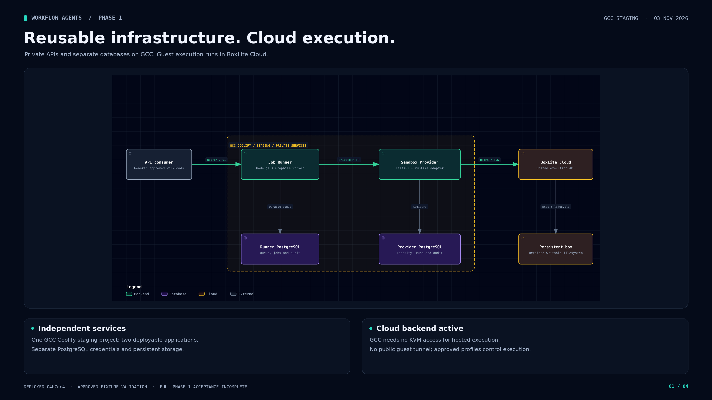
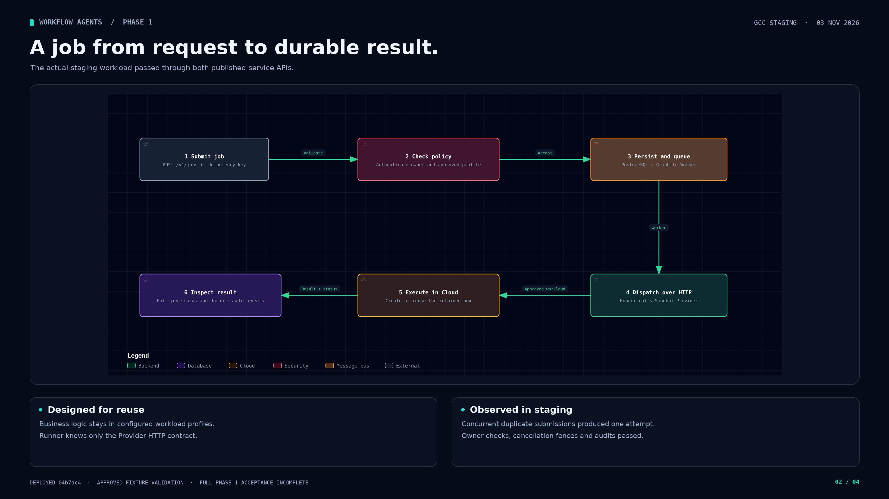
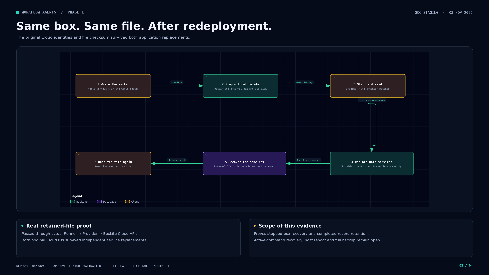
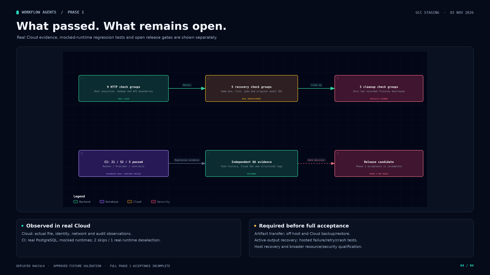

Four images explain the independent services, real Cloud execution and file-retention proof. Release acceptance remains incomplete; the final image distinguishes passed evidence from open gates.

Dark PNG · 4K Light PNG SVG Interactive


